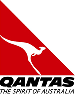
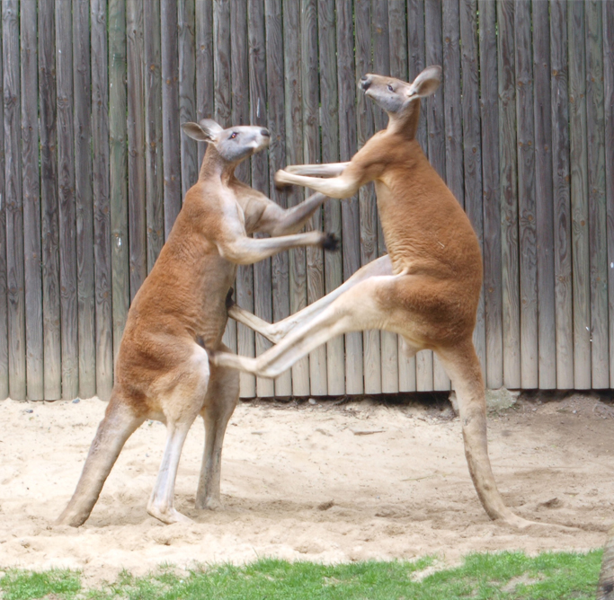
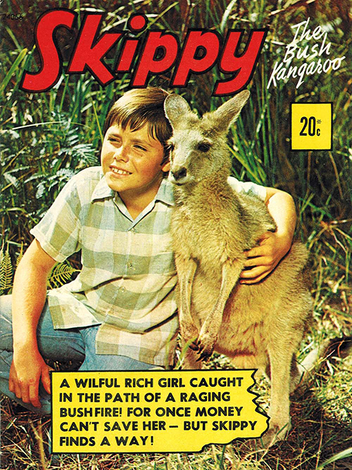

Popular Culture
The Flying Kangaroo
The kangaroo and emu are bearers on the Australian Coat of Arms. It has been claimed these animals were chosen to signify a country moving 'forward' because of a common belief that neither can move backwardAustralia's national airline, Qantas, uses a bounding kangaroo for its logo. The kangaroo has always been part of the Qantas logo,[6] and the airline has previously been known informally as "The Flying Kangaroo"
The Boxing Kangaroo
<The Boxing kangaroo – mascot for the Australia II team in the 1983 America's Cup. This rendition of the kangaroo has become a sporting icon, known informally as the green and gold "Sporting Kangaroo", and is highly popular with cricket crowds and international sporting events which feature Australian participation.
Skippy the Bush Kangaroo
<Skippy the Bush Kangaroo, star of the 1960s Australian children's television series.Wake in Fright is a 1971 movie which includes a controversial kangaroo hunting scene containing graphic footage of kangaroos actually being shot Matilda is a 1978 movie starring Elliott Gould about a promoter working with a kangaroo. Kangaroo Jack, the title character of an American film of the same name. A giant kangaroo is featured in the movie Welcome to Woop Woop.